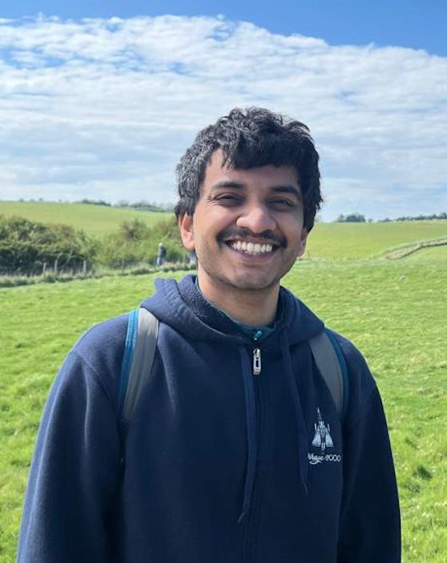

|
Aditya Marada
I am an MSc Computer Science student at the
University of Amsterdam,
where my thesis work focuses on large-scale learning-to-rank systems
at Qogita.
I have research experience spanning large language models,
representation learning, information retrieval, multi-agent systems,
and multilingual knowledge graphs.
Previously, I was as a senior software engineer at
Lendingkart in Bangalore,
designing distributed backend systems at scale across a platform
with 150+ microservices.
In 2025 I was a
Google Summer of Code
contributor at the DBpedia Association,
building multilingual knowledge-extraction pipelines for Hindi Wikipedia.
Email /
GitHub /
LinkedIn /
CV
|

|
Research
My research interests include large language models,
world models, multi-agent systems, and information retrieval.
I am particularly fascinated by problems at the intersection of scalable systems
and principled machine learning.
|
|
|
Smart Rankings: Learning-to-Rank at Scale
Aditya Marada
Master's Thesis, University of Amsterdam & Qogita — Jul. 2026
report
End-to-end LambdaMART pipeline over 52M+ product impressions, 163k buyers,
and 450k products. Engineered 72 point-in-time ranking features spanning
behavioural history, semantic embeddings, and session context.
Improved production NDCG@10 by 9.55 percentage points.
|
|
|
Coordination Without Commitment: Multi-Agent LLM Coordination
Aditya Marada
Research Project, University of Amsterdam — May 2026
report
Investigated coordination failures of decentralised LLM agents on distributed
computing tasks (consensus, graph colouring, leader election).
Designed the Neighbour Belief Protocol (NBP), which
substantially narrows the performance gap between smaller open-weight models
and frontier models on perception-limited tasks.
|
|
|
Reward-Aware World Models Using Joint-Embedding Predictive Architectures (JEPA)
Aditya Marada
Research Project, University of Amsterdam — Jun. 2026
report
Investigated whether JEPA latent representations encode recoverable reward
and value information for downstream RL. Key finding: reward supervision is
broadly compatible with the JEPA objective — jointly
optimising reward/value, latent-prediction, and SIGReg losses stabilises
fine-tuning across all 8 environments without representation collapse.
Compared against DreamerV3 and DINOv2 baselines.
|
|
|
LLM-Assisted Multilingual Information Extraction for Knowledge Graph Population: The DBpedia Hindi Chapter
Aditya Marada
ESWC 2026 Text2KG Workshop — Sep. 2025
paper
Hybrid multilingual IE system combining rule-based NLP with small LMs,
achieving 66% recall on Hindi-BenchIE. Built a complete
knowledge-graph population pipeline: entity linking, ontology alignment,
and SPARQL endpoint deployment. Google Summer of Code 2025 project.
|
|
|
Parallel K-Means Clustering Using CUDA
Aditya Marada
Programming Large-Scale Parallel Systems, University of Amsterdam — Jun. 2025
report
GPU-accelerated K-Means in C++/CUDA achieving a 47.6× speedup
over the sequential CPU baseline. Scalability experiments on the DAS-5
supercomputer across varying dataset sizes, dimensionalities, and cluster counts.
|
|
LLM-Assisted Multilingual Information Extraction for Knowledge Graph Population: The DBpedia Hindi Chapter
Aditya Marada
ESWC 2026 Text2KG Workshop, 2026
paper
A Framework to Capture the Shift in Dynamics of a Multi-phase Protest
Aditya Marada et al.
Springer Communications in Computer and Information Science (CCIS), 2021
paper
|
|
Cost-Aware Scheduling in OpenDC (2024)
Integrated cost awareness into the OpenDC datacenter simulation framework,
adding cost-based scheduling strategies for resource allocation decisions.
Kotlin, Java.
URL Shortener (2025)
URL shortener with JWT authentication, full CRUD, deployed on Kubernetes
using VMs provided by the eScience Center.
Python, Flask, Docker, Kubernetes.
Social Network Graph from Text (2020)
Built and analysed a co-occurrence social graph from Harry Potter and the Philosopher's Stone,
correlating graph structure with narrative events.
Python, Gephi, NLP.
|
|
{kind=link}